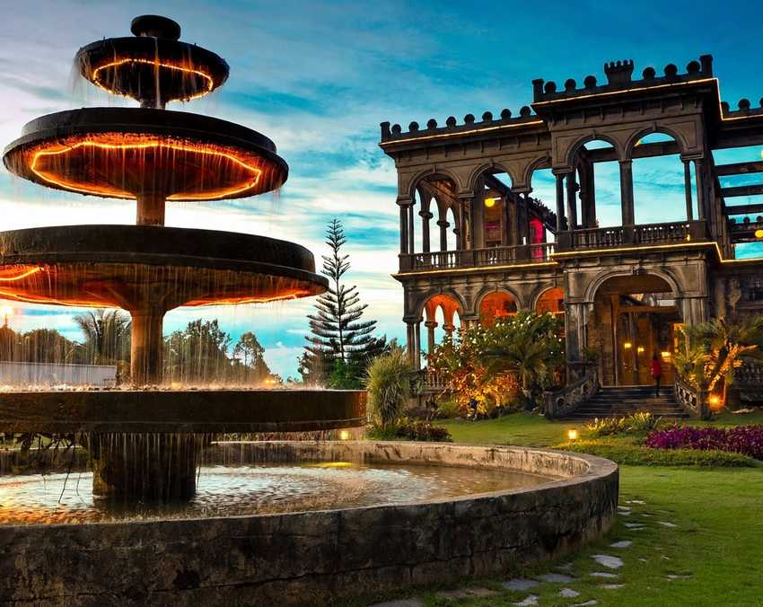

Choosing a hotel in Bacolod is mostly choosing a stretch of Lacson Street. The long avenue runs north to south through the city, and nearly every area worth staying in sits on it or a few blocks off it: the Capitol district in the middle, the older downtown to the west, Mandalagan to the north and Goldenfield at the southern end. Where you land decides whether your evenings start with a walk to the lagoon or a taxi ride.
This guide goes through each area in turn: what it is like to stay there, who it suits, the trade-offs, and a few hotels to start your search with. None of these are paid placements. They are simply well-known places in each part of town, and you should still compare current rates and recent reviews before you book.
If this is your first visit and you only have two or three nights, skip ahead: stay around the Capitol and you will be fine. The rest of the guide is for travellers with kids, a tight budget, a late-night streak or a plan to spend a night closer to The Ruins.

- Capitol and Upper LacsonThe easiest base for a first trip. Walkable, central and close to the lagoon, the museum and the restaurants.
- Downtown and Lower LacsonCheaper rooms, more noise, and the shortest ride to Manokan Country, the plaza and the port.
- MandalaganQuieter, residential and handy for Silay, Talisay and the airport road.
- Goldenfield and SingcangThe south side, with bars, a waterpark and budget rooms. Best for late nights.
Capitol and Upper Lacson: the easy first-timer base
The provincial capitol and its long lagoon sit right on Lacson Street, and the blocks around them are where most first-time visitors end up, for good reason. The Negros Museum is inside the same complex, Ayala Malls Capitol Central is next door, and the cafés and grill houses of Lacson Street start just outside. You can jog around the lagoon in the morning, see the museum before lunch and walk to dinner without calling a car.
The catch is price. Rooms here cost more than in other parts of town, and traffic builds on Lacson in the evening. Downtown is a short jeepney or taxi ride away, and the airport in Silay is roughly 30 to 45 minutes by car.
Hotels to look at
Seda Capitol Central stands at the corner of Lacson Street and North Capitol Road, beside the lagoon and the mall, which makes it about as central as Bacolod gets. L'Fisher Hotel, on 14th Lacson Street, is one of the city's long-standing names and an easy walk from the Capitol grounds. Citadines Bacolod City, also along Lacson, has serviced apartments that suit longer stays and families who want a kitchen.
For more on what to do once you are settled, here are the best things to do in Bacolod City for a first visit, most of them within reach of this area.
Downtown and Lower Lacson: closer to the grills
Old Bacolod is the area around the public plaza, San Sebastian Cathedral and Araneta and Gatuslao streets. It is busier, louder and cheaper than the Capitol district. Jeepney routes meet here, so getting almost anywhere in the city is simple, and the markets and bakeries are on your doorstep.
Toward the reclamation area west of downtown, SM City Bacolod, Manokan Country and the BREDCO port for the Iloilo ferries are all close together. If you are arriving or leaving by boat, a night in this part of town saves you an early taxi across the city.
Hotels to look at
Park Inn by Radisson Bacolod, beside SM City, puts you a short walk from the inasal stalls and the port. Budget and mid-range choices around downtown include Go Hotels Bacolod, Business Inn, MO2 Westown Hotel Downtown and Circle Inn Hotel and Suites. Expect simple rooms and rates that often fall somewhere between ₱1,200 and ₱3,000 a night, though prices move with the season.
The trade-off is the noise and the lack of green space. Ask for a room away from the street if you are a light sleeper. If food is the main reason for your trip, this Bacolod food trail covers where to eat beyond the inasal row.
Mandalagan: quieter nights on the north side
Mandalagan is a mostly residential district north of the centre, with subdivisions, schools and offices, and Robinsons Place Bacolod for shopping. The Art District, with its restaurants and bars, is close by too. It feels calmer than the Capitol and downtown, and it sits on the road toward Talisay, Silay and the airport.
That makes it a good base for families and for anyone planning to split their days between the city and the heritage towns. The downside: you will need a jeepney, taxi or ride app to get to the downtown restaurants, especially at night.
Hotels to look at
MO2 Westown Hotel Mandalagan is a mid-range choice that business travellers use a lot. Stonehill Suites and Acacia Hotel Bacolod lean toward resort-style city hotels with pools. Just past the boundary in Talisay, Nature's Village Resort has gardens and a pool, and it suits travellers who want space without going far from the city.
Goldenfield and Singcang: the south side for late nights
The Goldenfield Commercial Complex in Barangay Singcang, south of downtown along Lacson Extension, is where Bacolod goes after dinner. Bars and karaoke places keep the area busy late. During the day, the draw is the Caribbean Waterpark, which has pools and slides that children love.
Rooms here tend to cost less than around the Capitol. The trade-off is distance: you are well away from the lagoon, the museum and the old centre, and you will want a car for most sightseeing.
Hotels to look at
Goldenfield Kundutel sits inside the complex, a few steps from the nightlife. Caribbean Waterpark and Resotel combines rooms with the waterpark, making it an easy pick for a family weekend. Sugarland Hotel, on the Singcang end of Lacson Extension, is a long-running city hotel nearby.
A night near The Ruins or in Silay
You do not need to base your whole trip outside Bacolod, but one night up north can make sense. The Ruins in Talisay is about 20 to 30 minutes from the city centre, and it is at its best once the lights come on after sunset. Adult entry is around ₱150, and the estate closes at 8 PM, though events can change that. Staying nearby means you can stay for the lights without worrying about the drive back.
Silay, a little further north, has kept about 30 ancestral houses from the sugar era, including Balay Negrense on Cinco de Noviembre Street. A night there gives you the heritage streets in the quiet early morning before the heat sets in. Look for small guesthouses near the old centre, or stay at Nature's Village in Talisay, roughly halfway between the city and Silay. This day plan for The Ruins and Silay shows how to fit both into one outing.
Matching the area to your trip
First visit, two or three nights
Capitol and Upper Lacson
Walk to the lagoon, the museum and dinner, and take a single trip out for The Ruins.
Food first, tight budget
Downtown and Lower Lacson
Cheaper rooms, jeepneys everywhere, and inasal a short walk or ride away.
Families and quiet sleepers
Mandalagan
Calmer streets, malls nearby and the easiest drive to Silay and the airport.
Late nights or a waterpark
Goldenfield and Singcang
Bars, the waterpark and lower rates, but plan on a car for sightseeing.
Booking notes
Before you book
- Book early for OctoberMassKara fills the city through the month. Reserve two to three months ahead if your dates fall during the festival.
- Remember the airport is in SilayAllow 30 to 45 minutes by car to the city, longer at rush hour. Mandalagan is the closest of the city areas.
- Check what the rate includesMany Bacolod hotels add breakfast, but not all. Compare like for like before you choose the cheaper room.
- Use cars for the side tripsJeepneys and taxis cover the city well. For The Ruins and Silay, a ride app or hired car is easier, especially after dark.
There is no wrong answer in a city this size. Stay where your evenings will be easiest, whether that means a stroll around the lagoon, a plate of inasal a short ride away, or a quiet street in Mandalagan, and the rest of Bacolod is never far.
Photo credit: Tripadvisor.


Comments
No comments yet. Been here recently? Share a tip or ask a question.
Leave a Reply